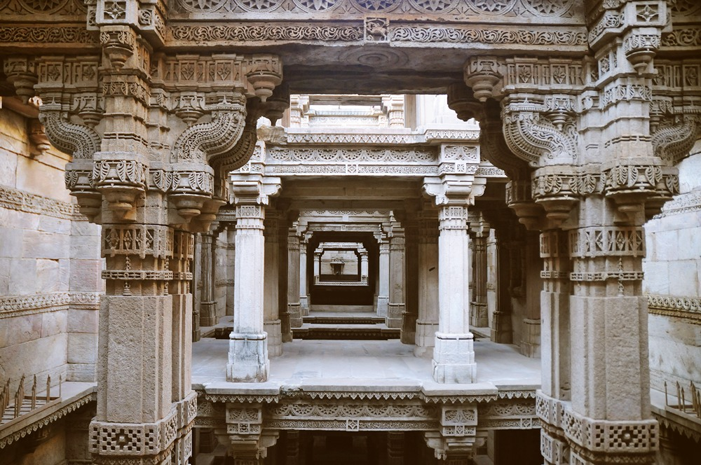
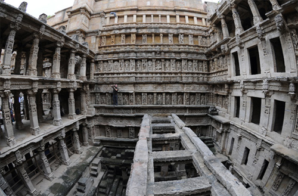
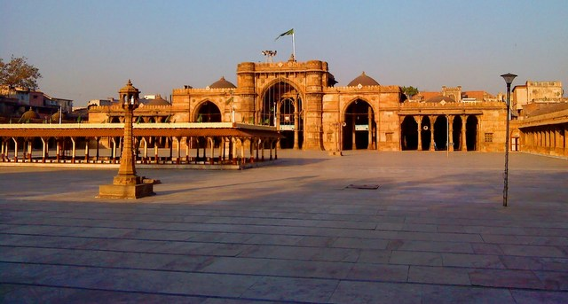

Set in the quiet village of Adalaj, this vav has served as a resting place for hundreds of years for many pilgrims and caravans along their trade routes. Built in 1499 by Queen Rudabai, wife of the Vaghela chief, Veersinh, this five-storey stepwell was not just a cultural and utilitarian space, but also a spiritual refuge. It is believed that villagers would come everyday in the morning to fill water, offer prayers to the deities carved into the walls and interact with each other in the cool shade of the vav.
Rani ki vav is a famous stepwell situated in Patan town in Gujarat in India. Patan was called as Anhilpur Patan when King Siddharja Jaysingh was ruling & it was the capital of Gujarat. Mr. Vanraja Chavda has founded Patan. During the period of the Solanki or Chalukya, the stepwell called the Rani ki vav, or Ran-ki vav (Queen’s step well) was constructed. It is a richly sculptured monument.
The Jama Masjid of Ahmedabad was probably the largest mosque in the Indian subcontinent built in this period. Designed as part of a major plan desired by the Emperor Sultan Ahmed Shah, the mosque is located south of the processional axis that runs from the Maidan-i Shah at the door with three arches, Teen Darwaza.
